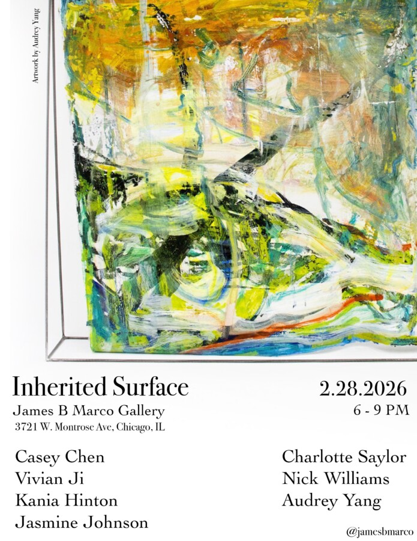

Inherited Surface
We are excited to announce the newest exhibition at James B Marco Gallery, “Inherited Surface”. 🕕 Opening: Saturday, February 28th from 6 – 9pm 📍3721 W. Montrose Ave, Chicago, IL
Featuring work by:
Casey Chen (@caseych3n)
Vivian Ji (@vivianzgee)
Kania Hinton (@niapapaya_44)
Jasmine Johnson (@jassythebean)
Charlotte Saylor (@charlotte_saylor_art)
Nick Williams (@ink_goblin_art)